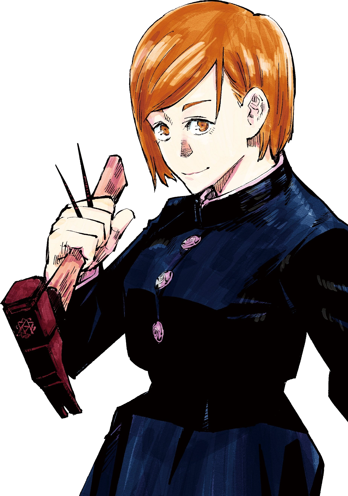

The powers in Jujutsu Kaisen rely on a concept called Cursed Energy, which comes from
the users negative emotions. The user could use this energy to create techniques, which
are called Cursed Techniques. High leveled sorcerers can turn their cursed energy negative
which allows them to heal themselves, and others.
The main character Yuji Itadori inherits the power of Sukuna, and his brother Choso which allows
him to use blood manipulation, and shrine technique. The shrine technique allows him to create
invisable slashes, and blood manipulation allows him to control his blood, and use it as a weapon.

The second man character Megumi Fushiguru has the technique called the Ten Shadows Technique, which allow
which allows him to manipulate shadows, and summon animals that are made of shadows called shikigami.
This technique came from the Zenin clan and only comes once in a generation.

The third main character Nobara Kugisagi has the technique called Straw Doll Technique, which
allows her to use straw dolls to attack her enemies soul.

the teacher of the 3 main characters is Satoru Gojo, who is the strongest character in the series.
His cursed technique is called the Limitless technique, which allows him to manipulate space.
This allows him to have techniques like lapse blue which creates a vaccum of space, and red which
creates a repulsion of space. Combining these two techniques creates a new technique called hollow
purple which erases anything at a molcular level.
Geto Suguru is the one of the villains in the series, and his technique is called Cursed Spirit
Manipulation, which allows him to eat curses and use them as his own.
Mahito is another villain in the series, and his technique is called Idle Death, which allows him to
manipulate souls. This allows him to change the shape of his body, and others.
Hanami is one of the small villains in the series, and his technique is called Disaster Plants, which allows him
to manipulate the plants around him.
Jogo is one of the villains in the series, and his technique is called Disaster Flames, which allows him to
make fire and manipulate it. He also has a move called maximum meteor, this summons a huge ball of fire that
explodes on imapct.
Sukuna is the main villain of the series, and his technique is called Shrine. This technique allows him to
create invisible slashes that can cut anything. He also has another technique called Fuga. This ability
allows him to create a fire arrow from his hands that he can shoot to make a huge explosion.